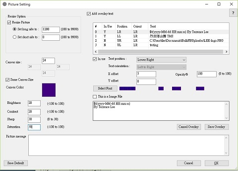
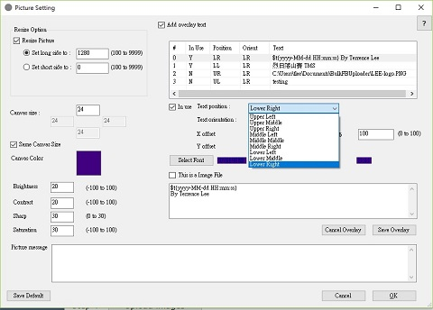
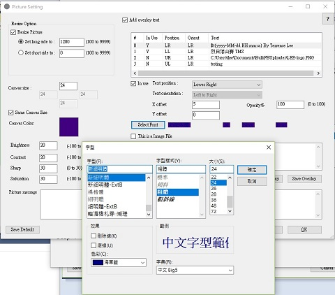

Picture Setting
BulkFBUploader come with a number of
useful photo manipulation options.
- Resize
In Resize, you have two options. Either set the length of the long size or the short side of your photo. For example, if your photo size is 6000x4000 pixel. Resize the long side to 1280 will result to 1280x853 pixel. Reside the short side to 1280 will result to 1920x1280 pixel. Facebook recommend the long side no more that 2048.
- Canvas
Canvas will give you a picture frame around your photo. To use this, just input the canvas size by pixel into the size box. If you set the value to 0, that will disable this function.
You could set the frame to different size on the 4 sides if you want. Normally they are having the same size. In BulkFBUploader, leave Same Canvas Size check box on check status.
The default canvas color is white. If you want to change it, click on the color box and that brings you the color picker.
Click after you select your color.

Please note that BulkFBUploader add the canvas on top of existing image. And BulkFBUploader will perform the resize operation before it add the canvas. If you resize an image to long side of 1872 and add a canvas of 24, the result long side will be 1872+24+24=1920. - Brightness
You could change the brightness of your picture. The range is -100 to 100. 0 is unchanged. - Contrast
You could change the contrast of your picture. The range is -100 to 100. 0 is unchanged. - Sharp
You could change the sharpness of your picture. The range is 0 to 30. 0 is unchanged. - Saturation
You could change the sharpness of your picture. The range is -100 to 100. 0 is unchanged. - Picture Message
You could add a message on each picture. For example, you could add the event name for later reference. Several special characters are available. To get more detail, please read Special Character.
- Add Overlay Text
You could add overlay text message or picture logo to your picture if you check this option. Currently, the system support up to 4 overlay text message/logo. To edit each overlay message/picture, you need to click the line in the overlay list box, edit the detail, then click to save the edited detail. Click will forfeit the change.
- In Use
If check, this overlay is in use. You could edit all the overlay detail but leave In Use uncheck. BulkFBUploader will skip this overlay setting.
- Text Position
The starting position of the overlay. For horizontal, It could be left, middle, and right. For vertical, it could be top, middle, and bottom.

- Text Orientation
Not in use now.
- X Offset
This works alone with Text Position. A positive value will shift the horizontal starting point to the right. A negative value will shift to the left. For example, if you have a canvas of 24 pixel in size on all side, and you want to put a logo at the top left corner of the actual picture, you could set Text Position as Top Left, Canvas size 24, X offset and Y offset both 24.
- Y Offset
Please see X Offset.
- Opacity
This set the opacity level of the text message or logo picture. The value is from 0 to 100.
- Select Font
Click select font to bring up the font selection dialog.

- Image File
Check This is an Image file to indicate this overlay is an image.
- Text Message
If This is an Image File is uncheck, the text in this box will appear in the picture at Text Position with X/Y Offset, having the font and opacity setup above. Several special characters are available. To get more detail, please read Special Character.
If This is an Image File is check, a button will appear. You could click this button to select an image file as the overlay logo.
After you select the image file, the file location and name will appear on the text message. And you cannot change this directly. The font setting will not have any effect when you use a image file.
- Cancel Overlay
This will cancel the change you make to this line of overlay message.
- Save Overlay
This will save the change you make to this line of overlay message. Please note that if you click another overlay line without save, the changes will not be save.
- Save Default
This will save the current picture setting as system default. Next time you run BulkFBUploader, the system will load the same value as default.
- Cancel
This will cancel all the change you make in picture setting.
- OK
This will save all the change and the system will use them in this session. However, after you quit the system, all settings will be gone. If you want to use the current settings as system default, you need to click the button.